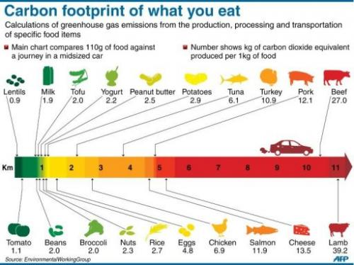

There are many strategies you can adopt when drinking and dining out to unsure your experience is sustainable. Such approaches range from the places you go to the foods that you eat! We have compiled a list of a few resturants/bars around manchester that adopt more sustainable strategies to buisness.
Humans waste roughly a third of food produced globally. Wasted food rots in landfill releasing methane into the atmosphere, a greenhouse gas that harms the environment. Additionally, 5.8 million people in the UK live in poverty, struggling to afford food. In an initiative to put a stop to this wasteful lifestyle, The Real Junk Food Project was born. They are a group of pay-as-you-feel cafés, using discarded food from supermarkets, restaurants and local stores that would otherwise go to waste, creating delicious, healthy meals on a donation basis. The Real Junk Food Project perfectly aligns with Manchester’s zero waste strategy.
Running as a co-operative, all workers at Eighth Day are of equal importance and are remunerated as such. Eighth Day value equality as well as quality and are committed to sourcing sustainable, ethical and organic food. They source their food locally to reduce environmental impacts of transportation and they give preference to Fairtrade, seasonal food. Recycling is of huge importance to the business and any food waste is composted in a controlled way. They also sell natural brands such as Ecover and Faith in Nature to promote the use of green household products. Of course, the café is powered entirely by renewable energy too!
Manchester’s only entirely vegan restaurant, V-Rev, is known for creating delicious meat free alternatives for traditional meat based fast-food dishes, such as burgers and hotdogs, as well as ‘pretend’ seafood treats. Nestled in Northern Quarter, V-Rev do all they can to minimize their carbon footprint and recycle as much as possible. They withhold the Vegan ethos and steer clear of any products that have been tested on animals, or containing a substance produced by an animal. They are just generally kind to the planet.
Shortlisted as one of the most sustainable restaurant groups in the country by the Sustainable Restaurant Awards, Hawksmoor is proud to ensure they are sourcing food sustainably and ethically. They also source their beers from local breweries, promoting local businesses, as well as ensuring staff and suppliers are treated fairly, which won them 12th place in the Sunday Times Best Companies. The restaurant group has also been given an award from Action Against Hunger for donating a sizeable half a million pounds to their charity. The Manchester restaurant is located on Deansgate.
Natural, seasonal, home-made food is the focus of this vegetarian café and juice bar. Awarded a Gold Food Futures certificate for serving healthy and sustainable food, Earth Café sources their food ethically and use organic produce where possible. Meals are based on what’s available at the market that day and all food is freshly made. Earth Café is considered a hidden gem, nestled in the basement of the Buddhist centre in the Northern Quarter, and has long inspired food lovers throughout the city to eat ethically.